Sport Club Corinthians Paulista
O inesquecível ano de 2025
RelembrarÀs 20h30 do dia 1º de setembro, à luz de um lampião, na esquina das ruas José Paulino e Cônego Martins, no bairro do Bom Retiro, o grupo de operários formado por Anselmo Corrêa, Antônio Pereira, Carlos Silva, Joaquim Ambrósio e Raphael Perrone fundaram o Sport Club Corinthians Paulista.
Com mais oito rapazes, foi formada a reunião dos primeiros integrantes e sócio fundadores do Timão, que teve seu nome inspirado na equipe inglesa Corinthian Football Club, que fazia excursão pelo Brasil.
O presidente escolhido por eles foi o alfaiate Miguel Battaglia, que, já no primeiro momento, afirmou: “O Corinthians vai ser o time do povo e o povo é quem vai fazer o time”.
Um terreno alugado na Rua José Paulino foi aplainado, virou campo e foi lá que,já no dia 14 de setembro, o primeiro treino foi realizado diante de uma plateia entusiasmada, que garantiu: “Este veio para ficar!”.

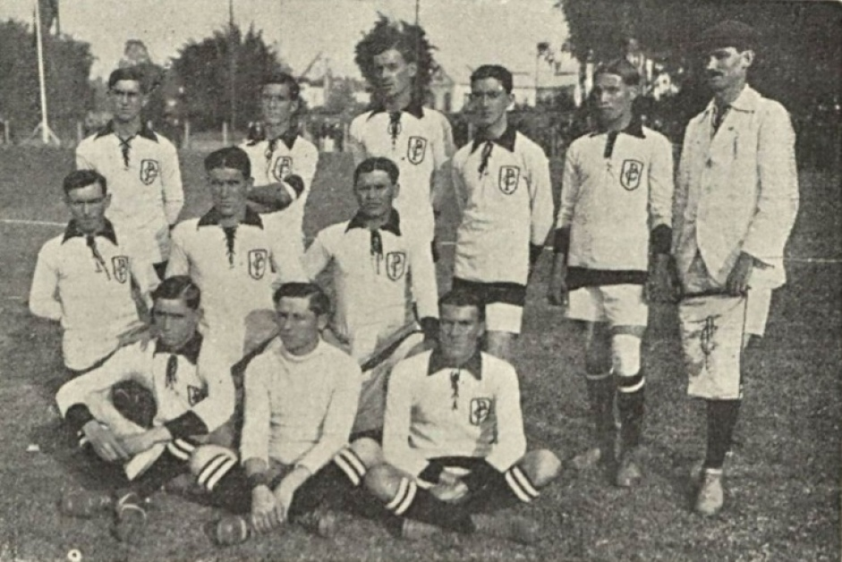
Para enterdemos o que fez o ano de 2025 do Corinthians ser tão especial precisamos voltar para o ano de 2024, sendo eliminado na semifinal da Copa do Brasil pelo Flamengo e logo depois elinado pelo Hacing na semifinal da Sula americana, no Campeonato brasileiro a situação era preucupente, em 16° colocado e com apenas um ponto acima do primeiro time da zona de rebaixamento, o time do povo tinha menos de 0,04% de chances de se classificar para a Copa do Brasil, que atualmente é o Campeonato nacional mais relevante do Brasil, tornando assim o ano de 2024 um ano perdido, jornalistas afirmavam que o time do Corinthians iria cair para a série B do brasileirão e no melhor cenário possivél consiguiriam uma vaga na Sula americana.
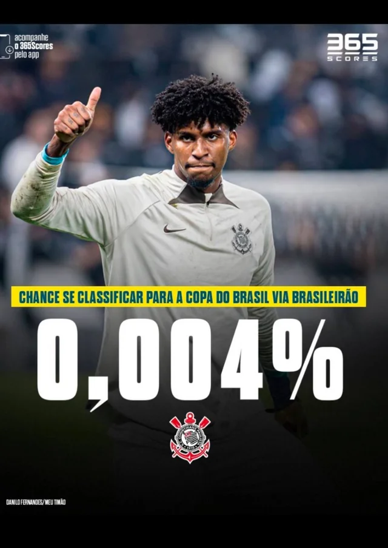
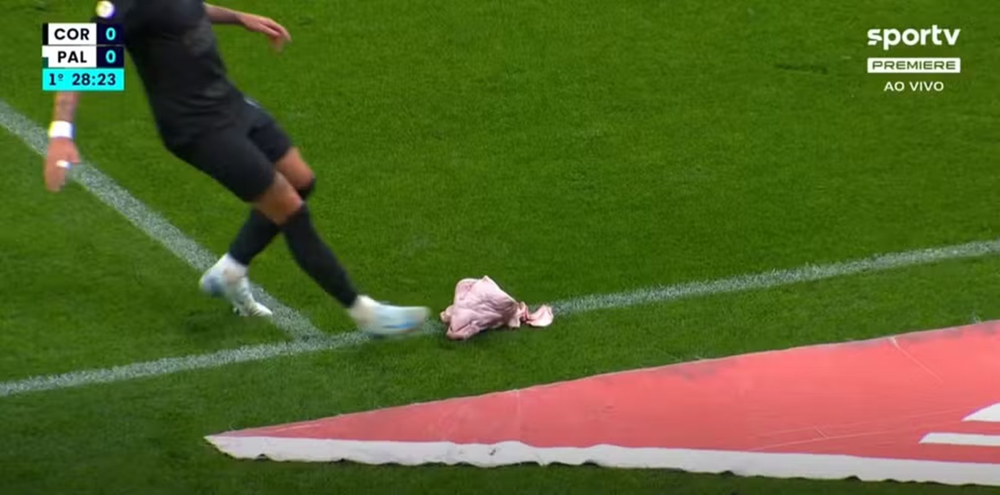
Mas não existe algo impossível quando se trata do Sport Clube Corinthians Paulista. A virada de chave começou com a contratação de Ramon Diaz e novos jogadores como Menphins Depay, o que aumentou a confiança do elenco e então, no dia 04/11/2024 pela 34 rodada do Brasileirão, o Corinthians enfrentaria o Palemrias, seu maior rival dentro da Neoquímica Arena, aos 41 minutos do primeiro tempo, após uma falha da zaga palmeirense, Rodrigo Garro marca para o Corinthians, o gol que definiu a virada de chave para o time e aos 56 minutos do segundo tempo Yuri Alberto amplia para o Corinthians, consolidando assim uma importante vitória. Em um Derby tenso,
Com a sequência de vitórias e a melhora em campo, o elenco e a torcida do Sport Club Corinthians Paulista iniciaram 2025 cheios de expectativa. Afinal, o Corinthians já somava 6 anos sem conquistar títulos, o que aumentava ainda mais a pressão por resultados. A estreia no Campeonato Paulista foi contra o Red Bull Bragantino, com vitória por 2 a 1. Após esse
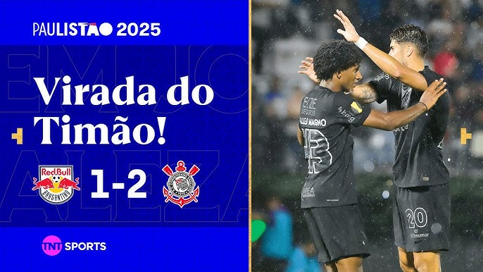
Porém, no primeiro grande teste contra um adversário mais qualificado, o Corinthians foi derrotado por 3 a 1 pelo São Paulo. A atuação abaixo do esperado gerou questionamentos sobre o desempenho da equipe. Mesmo assim, o time respondeu rapidamente e, no jogo seguinte, venceu a Ponte Preta com tranquilidade, retomando a confiança.
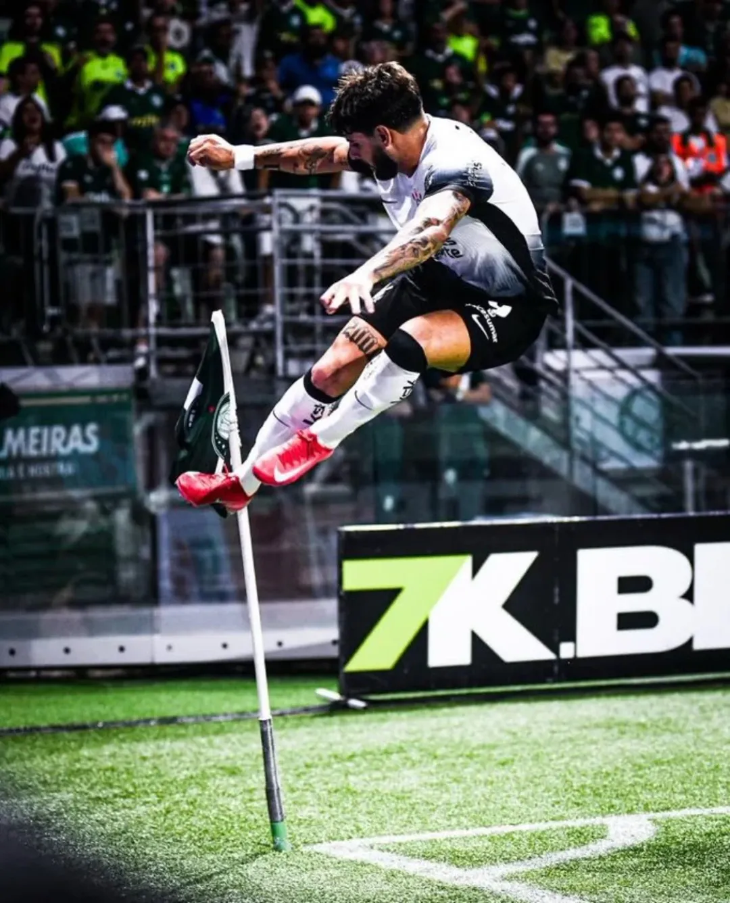
No dia 06/02/2025, o Corinthians enfrentou o Palmeiras ainda na fase de grupos, em jogo realizado no Allianz Parque. Pelo contexto recente, a partida já começou intensa. O Palmeiras abriu o placar logo no início, mas o Corinthians reagiu e buscou o empate no final do primeiro tempo com Yuri Alberto, que acabou recebendo cartão amarelo pelacomemoração. Já aos 18 minutos do segundo tempo, o centroavante corinthiano simulou uma falta, recebeu o segundo cartão amarelo e foi expulso. Com um jogador a menos, o Corinthians precisou se defender até o fim. Nos minutos finais, o Palmeiras teve um pênalti a seu favor, cobrado por Estêvão, jovem promessa do futebol brasileiro. No entanto, Hugo Souza brilhou, acertou o canto e fez a defesa, garantindo o empate em 1 a 1. Pelo contexto da partida, o resultado foi extremamente valorizado pela torcida.
Outra partida marcante da fase de grupos foi contra o Santos. A equipe adversária ganhava ainda mais atenção com o retorno de Neymar, o que aumentava a expectativa para o confronto. O Santos, utilizando uma marcação em linha alta, conseguiu controlar boa parte do jogo, explorando as fragilidades nas laterais e na defesa do Corinthians. Mesmo com dificuldades, o Corinthians conseguiu se encontrar na partida. Em uma bela jogada de Martínez, que fez um cruzamento preciso, Yuri Alberto apareceu bem posicionado para empurrar a bola para o fundo das redes e abrir o placar. O segundo gol veio após uma grande jogada coletiva do trio ofensivo formado por Rodrigo Garro, Memphis Depay e Yuri Alberto, mostrando entrosamento e qualidade técnica. O Santos ainda conseguiu diminuir o placar, mas não foi suficiente para evitar a derrota. A partida terminou em 2 a 1 para o Corinthians, consolidando mais uma vitória importante na fase de grupos.
Com o bom desempenho no Paulista, o Corinthians chegava otimista para a Pré-Libertadores. Porém, mesmo enfrentando adversários teoricamente mais fracos, o time encontrou muitas dificuldades. O primeiro confronto foi contra o Universidad Central, da Venezuela. No papel, era um jogo que não deveria trazer grandes problemas, mas dentro de campo a história foi diferente.No jogo de ida, fora de casa, o Corinthians até saiu na frente com gol de André Carrillo, mas recuou excessivamente e acabou sofrendo o empate, encerrando a partida em 1 a 1. O resultado já ligava um sinal de alerta, mostrando que a equipe ainda tinha dificuldades em sustentar vantagens durante o jogo.
Na partida de volta, na Neo Química Arena, o Corinthians começou pressionando e abriu o placar logo nos primeiros minutos com Yuri Alberto. No entanto, assim como no jogo de ida, a vantagem durou pouco, apenas alguns minutos depois, o time venezuelano empatou novamente. Ainda no primeiro tempo, Matheus Bidu colocou o Corinthians à frente mais uma vez, mas novamente a equipe sofreu o empate poucos minutos depois, levando o jogo para o intervalo em 2 a 2. No segundo tempo, o Corinthians pressionava, mas encontrava dificuldades para furar a defesa adversária. O tempo passava e a tensão aumentava. Foi então que, aos 43 minutos do segundo tempo, Yuri Alberto apareceu mais uma vez para marcar o gol decisivo, garantindo a vitória por 3 a 2 e a classificação sofrida para a próxima fase da competição.
O segundo confronto seria contra o Barcelona de Guayaquil do Equador, o primeiro jogo foi no Equador e jogo foi um verdadeiro desastre o Barcelona conseguiu Abrir 3 gols de vantagem, ou seja no jogo da volta o Corinthians teria que marcar 3 gols para pelo menos levar a partida para os pênaltis. Em casa o Corinthians até conseguiu uma vitória por 2 a 0, não conseguindo sua classificação para a Libertadores.
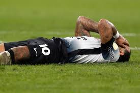
Nas fases eliminatórias do Paulista é preciso voltar alguns dias, o Corinthians enfrentou o Mirassol em casa pelas quartas de final e com a contratação do Lateral Fabrizio Angileri o Corinthians conseguiu avançar com tranquilidade diante do Mirassol, com gols de Ángel Romero e Menphins Depay.
Com a eliminação na Pré-Libertadores, o clima ficou pesado nos bastidores do Sport Club Corinthians Paulista. A queda precoce aumentou a pressão sobre o elenco, que precisava reagir rapidamente, já que poucos dias depois teria um confronto decisivo contra o Santos Futebol Clube. O clima para o jogo ficou ainda mais tenso após uma declaração de Neymar, que afirmou que “eles têm mais medo de me pegar do que eu tenho de pegar eles”. A fala esquentou o clássico, aumentando a expectativa da torcida e da mídia. No entanto, no dia da partida, o atacante sequer entrou em campo, alegando desconforto na coxa. Dentro de campo, o Corinthians adotou uma postura agressiva desde o início. Em uma boa jogada do trio ofensivo, Yuri Alberto abriu o placar, colocando o time à frente. Apesar do bom momento, a equipe voltou a apresentar falhas defensivas e, após um vacilo da zaga, Tiquinho Soares empatou a partida, levando o jogo para o intervalo em 1 a 1. No segundo tempo, o Corinthians voltou mais organizado e determinado. Em uma jogada dentro da área, Rodrigo Garro recebeu a bola e marcou um golaço no ângulo, recolocando o time em vantagem. Já nos minutos finais, dois jogadores do Santos foram expulsos, o que facilitou o controle da partida pelo Corinthians, que administrou o resultado com tranquilidade.
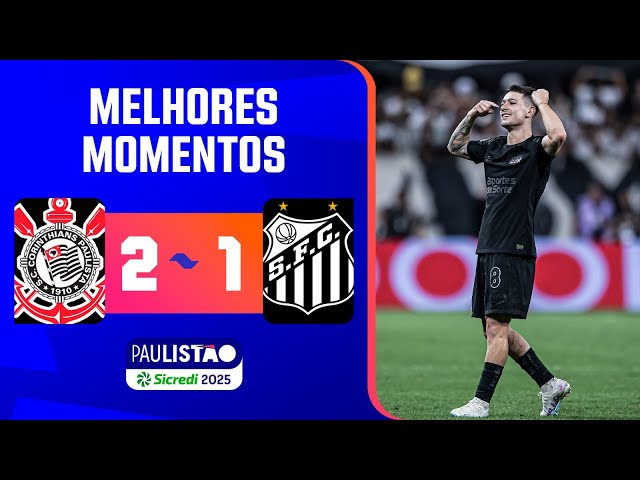
A grande final seria contra o seu maior rival, o Sociedade Esportiva Palmeiras, e o peso dessa decisão ia muito além de um simples título estadual. Para os dois lados, era uma final carregada de história, rivalidade e provocações acumuladas ao longo dos anos. Do lado palmeirense, a motivação era enorme a conquista significaria um tetracampeonato consecutivo algo inédito na era moderna do campeonato e ainda teria um ingrediente especial, podendo acontecer dentro da casa do Sport Club Corinthians Paulista. Seria também uma forma de “devolver” a final de 2018, quando o Corinthians conquistou o título no Allianz Parque. Já para o Corinthians, o jogo carregava um peso talvez ainda maior. O clube vivia um jejum de 6 anos sem títulos, sendo o último justamente o Paulistão de 2019. Além disso, havia um sentimento de revanche recente em 2020, o Palmeiras impediu um possível tetracampeonato corinthiano dentro do seu próprio estádio. Agora, o cenário colocava o Corinthians diante da oportunidade perfeita de mudar essa história. Era, portanto, muito mais do que uma final. Era sobre encerrar um jejum, impedir um feito histórico do rival e reafirmar a identidade competitiva do Corinthians. Um clássico que carregava passado, presente e a chance de reescrever a narrativa entre os dois clubes.
No dia 16/03/2025 aconteceu o primeiro jogo da final entre Sport Club Corinthians Paulista e Sociedade Esportiva Palmeiras. O Palmeiras entrou em campo com o desejo de se vingar dos últimos Dérbis, o que deixou a partida ainda mais tensa desde o início. O jogo foi marcado por muita disputa, poucas chances claras e um forte equilíbrio entre as equipes. As duas defesas se impunham, e cada erro poderia ser decisivo. Foi então que, aos 27 minutos do segundo tempo, brilhou novamente a estrela de Yuri Alberto. Após um rápido contra-ataque, o atacante finalizou no contrapé do goleiro, abrindo o placar para o Corinthians. O gol foi suficiente para garantir a vitória por 1 a 0 no primeiro jogo da final, dando uma vantagem importante ao Corinthians para a decisão e aumentando ainda mais a confiança da equipe para o confronto decisivo.
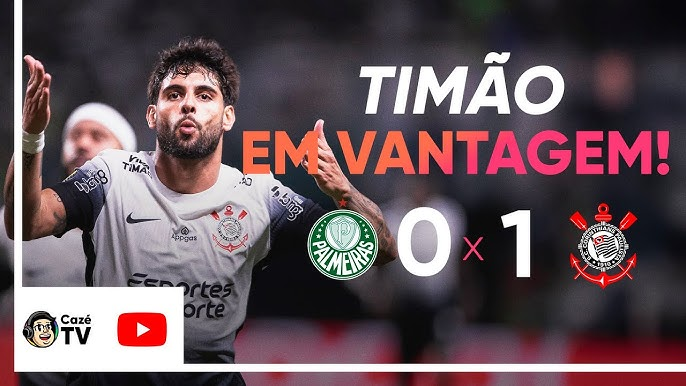
Então, no dia 27/03, aconteceu o segundo e último jogo da final entre Sport Club Corinthians Paulista e Sociedade Esportiva Palmeiras. A Neo Química Arena estava completamente lotada, com mais de 48 mil torcedores presentes, em um dos maiores públicos da história do estádio. Com a vantagem de 1 a 0 conquistada no primeiro jogo, o Corinthians entrava como favorito ao título, mas sabia que, em um clássico, nada é simples. A diferença de postura entre as equipes era evidente o Palmeiras entrou focado no jogo, enquanto o Corinthians parecia disposto a travar uma verdadeira batalha em campo.
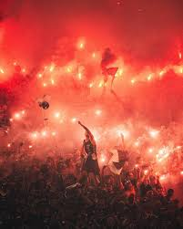
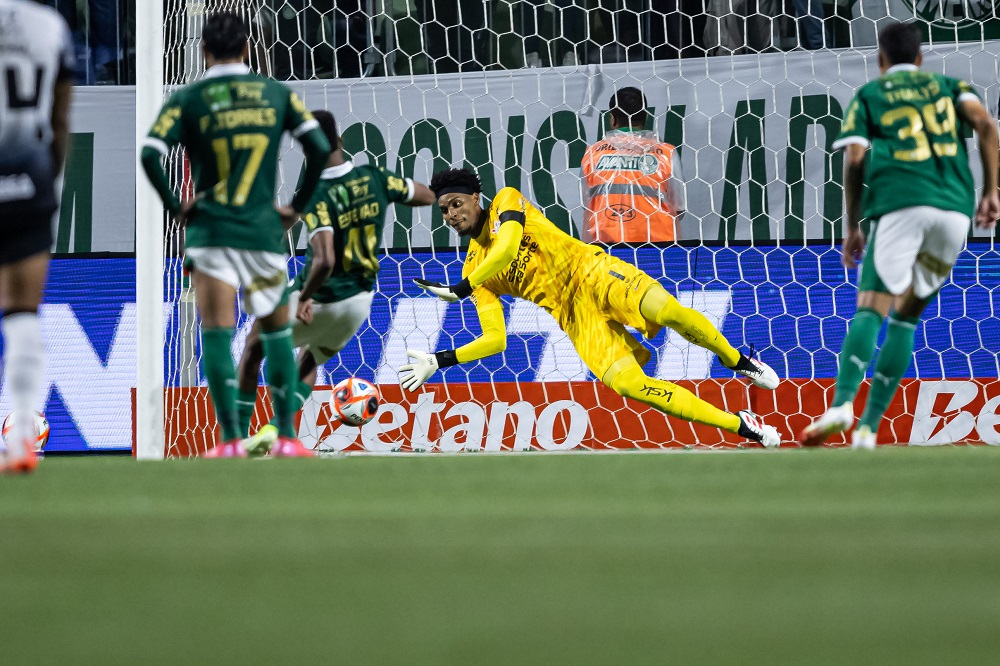
O jogo era tenso, físico e carregado de emoção. Até que, aos 23 minutos do segundo tempo, Félix Torres cometeu um pênalti, mudando completamente o rumo da partida.Na cobrança, estava Raphael Veiga, um dos jogadores mais confiáveis do Palmeiras. O momento trouxe à memória confrontos recentes, colocando frente a frente o principal cobrador do rival contra
A partir daí, a partida saiu do controle. O jogo ficou mais nervoso, com entradas duras, discussões e muita provocação. Mesmo após a expulsão de um zagueiro do Corinthians, o time se manteve firme. Memphis Depay assumiu protagonismo, participando intensamente do jogo e mexendo com o emocional dos adversários. Após uma provocação de Menphins subindo em cima da bola, houve uma confusão generalizada, resultando em expulsões para ambos os lados. O ambiente na Neo Química Arena se transformou completamente a torcida cantava sem parar, criando uma atmosfera que parecia sufocar o adversário, como os torcedores do Corinthians falam aquele lugar virou um hospício. Com longos minutos de acréscimo, o Palmeiras tentava, mas parecia perdido em campo diante da pressão. Até que, após mais de 15 minutos adicionais, o árbitro apitou o fim de jogo. O Corinthians era campeão paulista pela 31ª vez.
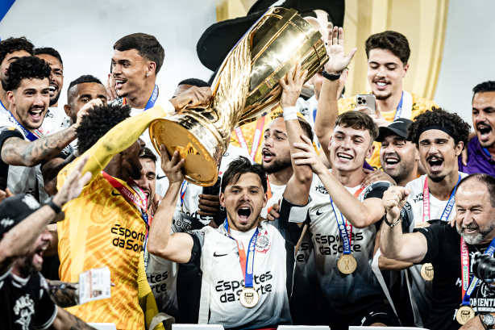
Esse título foi muito mais do que apenas um campeonato estadual para o Sport Club Corinthians Paulista. Ele representou a volta por cima de um time que, pouco tempo antes, parecia à beira do colapso. Foi a quebra de um jejum de 6 anos sem conquistas e a confirmação de que o Corinthians havia retornado à primeira prateleira do futebol brasileiro. Yuri Alberto, que em 2024 foi duramente criticado por parte da mídia e até da própria torcida, deu a volta por cima e se tornou um dos jogadores mais importantes da equipe na temporada. Decisivo nos momentos certos, ele simbolizou a recuperação não só individual, mas de todo o elenco. Já Memphis Depay, o holandês que chegou cercado de dúvidas, demorou a se adaptar, mas aos poucos conquistou seu espaço. Com personalidade, técnica e entrega dentro de campo, caiu nas graças da torcida e passou a ser peça fundamental, principalmente nos jogos decisivos. No fim, aquele título não foi só uma taça. Foi a prova de que o Corinthians, quando pressionado, encontra forças para se reconstruir e que nunca pode ser dado como derrotado.
Antes de abordar a conquista da Copa do Brasil, é necessário compreender o contexto em que o Sport Club Corinthians Paulista se encontrava. O ano de 2025 foi um dos mais conturbados da história recente do clube fora de campo, marcado por uma grave crise financeira que atingiu cerca de 3 bilhões de reais.
Além disso, houve o impeachment do então presidente Augusto Melo, em decorrência de um escândalo de corrupção envolvendo a empresa VaideBet. Para agravar a situação, o clube sofreu um transfer ban, que limitou a contratação a apenas dois jogadores durante toda a temporada. A situação em campo também não era das melhores, o que ocasionou na demição do tecnico Ramon Dias e então no final de abril Dorival Junior é anunciado como novo treinador da equipe do Corithians
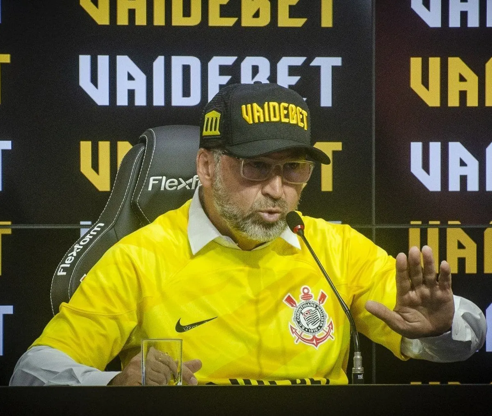
A caminhada começou na terceira fase contra o Novorizontino. Sem muito brilho, mas com extrema eficiência, o Corinthians venceu os dois jogos por 1 a 0, mostrando desde o início sua principal característica: um time sólido defensivamente e decisivo nos momentos certos.
Nas oitavas de final surgiu o primeiro grande desafio, mais um clássico contra o Sociedade Esportiva Palmeiras. A imprensa tratava o confronto como um verdadeiro “Davi contra Golias”, evidenciando o contraste entre as equipes. De um lado, um elenco milionário, repleto de contratações e estabilidade financeira; do outro, o Sport Club Corinthians Paulista, em processo de reconstrução e enfrentando diversas limitações dentro e fora de campo.
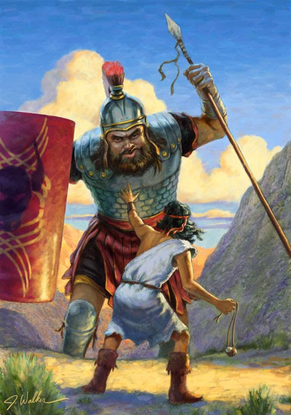
Dentro da Neo Química Arena, o Sport Club Corinthians Paulista foi superior durante o primeiro tempo, criando as melhores oportunidades e, inclusive, desperdiçando uma cobrança de pênalti.
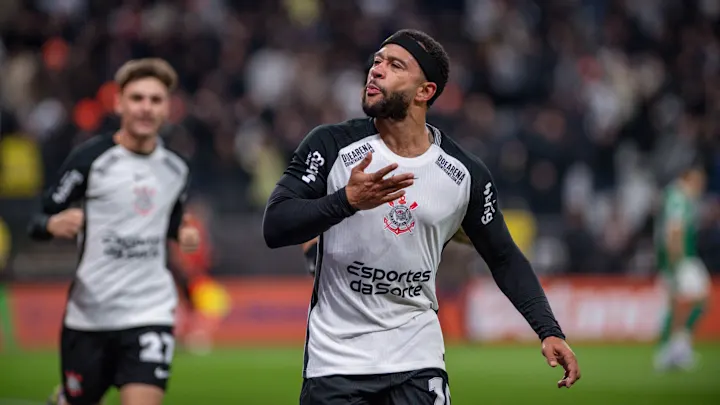
Já na segunda etapa, quando o Sociedade Esportiva Palmeiras começava a assumir o controle da partida e se mostrava superior até que, aos 79 minutos, Memphis Depay, de cabeça, abriu o placar, garantindo a vitória por 1 a 0 diante de sua torcida, levando vantagem para o jogo de volta.
No Allianz Parque lotado, o Corinthians jogou com inteligência e raça. Ainda no primeiro tempo, Aníbal Moreno, do Palmeiras, foi expulso após dar uma cabeçada em um jogador do Corinthians. Aos 43 minutos da primeira etapa, Matheus Bidu abriu o placar. Já no segundo tempo, aos 60 minutos, Gustavo Henrique subiu mais alto e, de cabeça, ampliou o resultado, selando a vitória por 3 a 0 no agregado.
Nas quartas de final, o adversário foi o Athletico Paranaense. Mais uma vez, o Corinthians demonstrou sua força defensiva e controle emocional. Jogando com inteligência, a equipe conseguiu um resultado importante fora de casa, vencendo por 1 a 0.
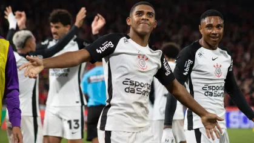
No segundo jogo, o Corinthians voltou a vencer, desta vez por 2 a 0. Mantendo a mesma postura sólida, a equipe controlou bem a partida, neutralizou as principais jogadas do Athletico Paranaense e aproveitou as oportunidades criadas para ampliar a vantagem, confirmando a classificação com tranquilidade.
Na semifinal, o adversário seria o Cruzeiro, que, no papel, se mostrava superior ao elenco do Corinthians. A equipe mineira contava com um time recheado de contratações, entre elas o goleiro Cássio, considerado por muitos um dos maiores ídolos da história do Corinthians, além de Gabigol, grande reforço para o ataque no ano de 2025. Dias antes da semifinal, pelo Campeonato Brasileiro, o Cruzeiro venceu o Corinthians por 3 a 0, sem grandes dificuldades. O resultado aumentou a pressão sobre a equipe e reforçou o favoritismo do adversário, fazendo com que a mídia passasse a tratar o Corinthians como praticamente eliminado antes mesmo do confronto decisivo.
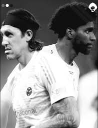
O roteiro da semifinal parecia escrito por Hollywood. O Corinthians carregava uma dura derrota por 3 a 0. Um golpe que colocava em dúvida a classificação. Mas o cenário reservava algo ainda mais simbólico. De um lado, Cássio, um dos maiores ídolos da história do clube, agora vestindo outra camisa, transformado, naquele momento, em adversário. Do outro, Hugo Souza, o herdeiro involuntário, carregando não apenas a responsabilidade da posição, mas o peso de substituir uma lenda. Era mais do que um jogo. Era um confronto de histórias.
No primeiro capítulo dessa batalha, em Belo Horizonte, o Corinthians entrou em campo como se ignorasse qualquer desvantagem. Jogou com personalidade, com coragem como quem se recusa a aceitar o próprio destino. E então, aos 22 minutos do primeiro tempo, Memphis Depay. Com frieza, balançou as redes e silenciou o estádio. Era o início da virada emocional. A partir dali, o Corinthians não apenas segurou o resultado ele controlou o jogo, impôs sua presença e mostrou maturidade. Quando o apito final ecoou, não era apenas uma vitória fora de casa. Era a prova de que aquela equipe ainda estava viva. E que a decisão, agora era em casa, não seria apenas um jogo seria um acerto de contas com o próprio destino.
No segundo jogo, dentro da Neo Química Arena, o Cruzeiro começou pressionando, enquanto o Corinthians se defendia, contando com grandes defesas de Hugo Souza. Apesar da resistência, aos 33 minutos do primeiro tempo, Keny Arroyo abriu o placar de cabeça para o Cruzeiro, levando o jogo empatado no agregado para o intervalo. Na segunda etapa, o Corinthians voltou mais ofensivo, mas, em um contra-ataque da equipe mineira, o Cruzeiro marcou o segundo gol logo aos 5 minutos do segundo tempo. Com isso, o Corinthians passou a precisar de pelo menos um gol para levar a decisão aos pênaltis. A reação foi imediata, cinco minutos depois, Matheus Bidu empatou a partida. O Corinthians seguiu pressionando até o fim, criou boas chances e ainda acertou a trave em duas oportunidades, mas não conseguiu a virada. Assim, levando a decisão para os pênaltis.
A disputa de pênaltis foi carregada de emoção, colocando frente a frente o passado e o presente do Corinthians. Logo na primeira cobrança, Cássio acertou o canto e fez a defesa, aumentando ainda mais a tensão. As cobranças seguintes foram convertidas uma após a outra, até a última da série inicial.
O Corinthians precisava de um milagre para seguir vivo na disputa. Foi então que o destino colocou frente a frente Gabigol e Hugo Souza. Conhecido como um dos melhores cobradores de pênalti do Brasil, Gabigol havia entrado em campo apenas para a disputa. Na cobrança, porém, bateu de forma displicente no canto direito, e Hugo Souza, atento, acertou o lado e fez mais uma grande defesa, mantendo o Corinthians vivo na disputa. Na sequência, o sexto pênalti do Corinthians foi convertido, levando
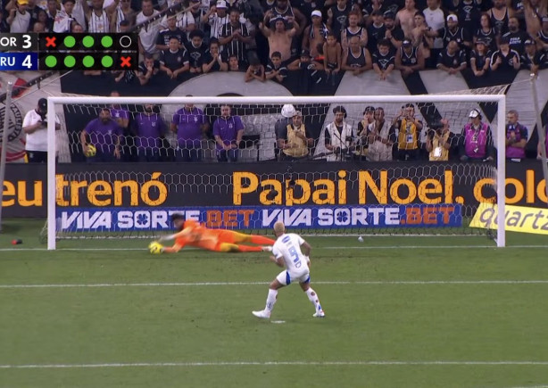
Essa classificação provou, de forma definitiva, que um novo capítulo começava a ser escrito. A final seria contra o Vasco da Gama, outro clube que, assim como o Corinthians, chegava como azarão. Mesmo sem o favoritismo, a equipe entrava na decisão com o objetivo de surpreender e conquistar o título.
Na grande final, o Corinthians enfrentou o Vasco da Gama. No jogo de ida, na Neo Química Arena, o Corinthians por ter muitos jogadores amarelados acabou se preservando para o jogo da final, o jogo foi bem travado e sem grandes emoções pelos dois lados, o empate sem gols deixou tudo em aberto.
A decisão foi disputada no Maracanã. O Vasco da Gama, que não conquistava um título de expressão desde 2011, via na final a oportunidade de encerrar esse jejum, em um cenário de pressão total. Mesmo fora de casa, o Corinthians mostrou personalidade. Yuri Alberto abriu o placar aos 17 minutos, mas o Vasco reagiu e empatou a partida ainda antes do intervalo.
No segundo tempo, novamente aos 17 minutos, em uma jogada de gênio de Breno Bidon, que driblou a marcação e iniciou um contra-ataque, a bola chegou até Yuri Alberto, que serviu Memphis Depay. O atacante apenas empurrou para o gol, garantindo a vitória e o título da Copa do Brasil para o Corinthians.
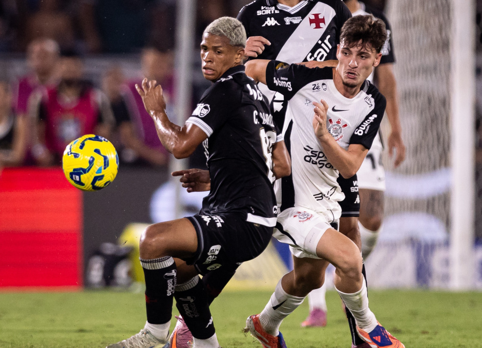
A conquista trouxe todas as memórias de volta: os 0,004% de chance de classificação, o título paulista sobre o rival, as classificações emocionantes e a superação em um ano conturbado. Mais do que um troféu, foi a consolidação de nomes como Memphis Depay, Yuri Alberto e Hugo Souza, símbolos de uma nova fase no clube.
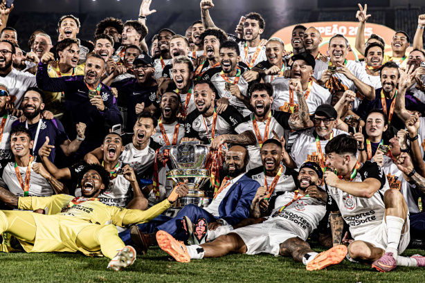